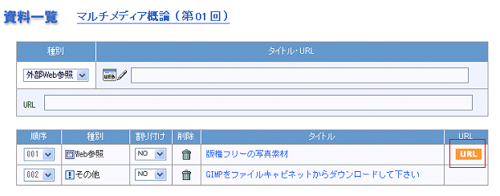
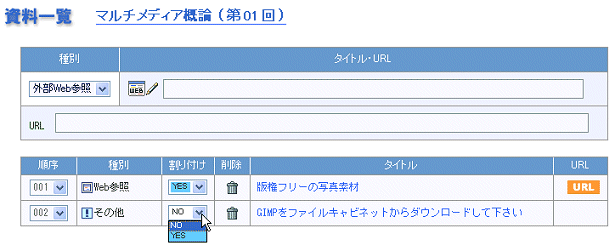

|
同様にして二つの資料を登録したのが下の図です．右端のオレンジ色のURLをクリックすると，登録したURLを開くことができます．記入のチェックに利用します．「その他」は指示なのでURLを書いていません．登録が終わると，次は割付を行います．

 割り付けたい資料は割り付けリストボックスでYESを選ぶ 割り付けたい資料は割り付けリストボックスでYESを選ぶ
登録した資料はこの科目の資料としてプールされます．特定の講義に直接関係付けるのではないことに注意してください．そこで，「第01回のガイダンス」に割り付けるには，資料の割り付けリストボックスでYESを選ぶ必要があります．

|
|
 教材資料を掲示する
教材資料を掲示する
 タイトルとURLの掲示
タイトルとURLの掲示